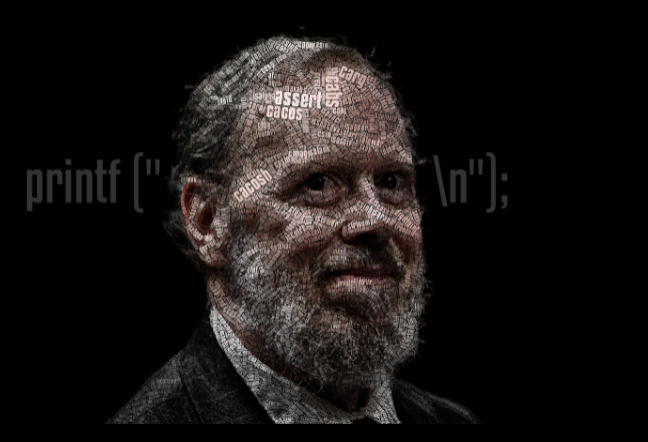

Dennis Ritchie

This is the picture of Dennis Rtvhie
This is the picture of Dennis Rtvhie
Ritchie was best known as the creator of the C programming language, a key developer of the Unix operating system, and co-author of the book The C Programming Language. Ritchie worked together with Ken Thompson, the scientist credited with writing the original Unix; one of Ritchie's most important contributions to Unix was its porting to different machines and platforms.